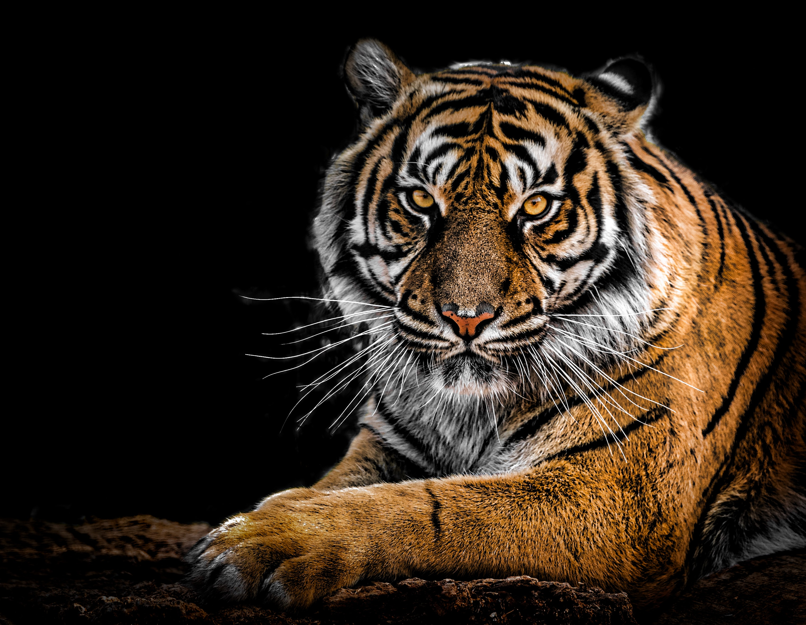

El tigre se caracteriza por ser el felino más fuerte y grande del mundo. También llama la atención su llamativo pelaje rayado. Es un animal mamífero y carnívoro. Este feroz cazador nocturno tiene grandes y afilados colmillos y poder0osas garras.
Curiosidades
-
Es uno de los mamíferos que más alto puede saltar
-
Está en peligro de extinción
-
Las rayas de un tigre son únicas en cada ejemplar
-
En el siglo XX, se extinguieron tres subespecies de tigres
